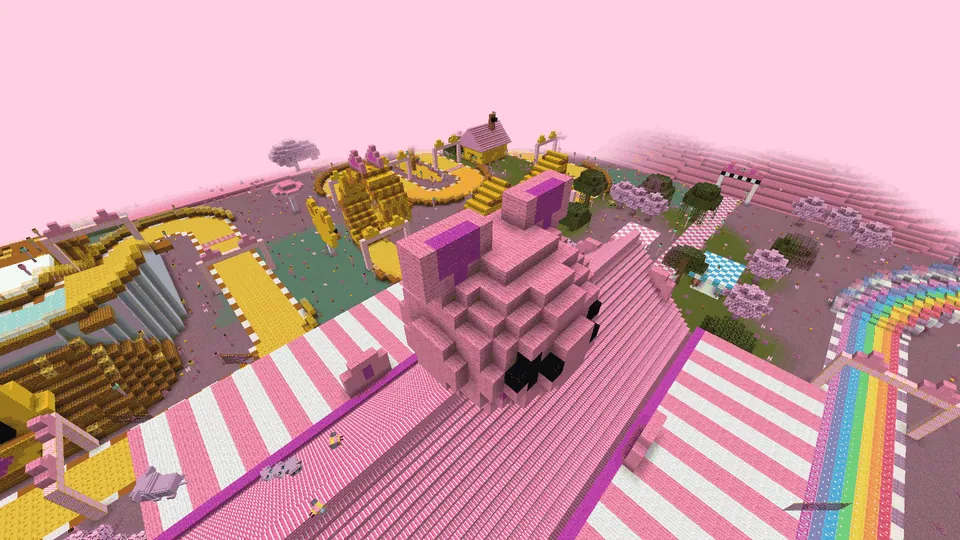

Minigame: drie racebanen (Regenboogbaan, Vadsbaan, Kaasbergbaan) met Coach Vahoegvroem - makkelijk, medium of lastig
Guh-Circuitrare, Guhvelden, Kaasvlaktezeldzaam, Guhvelden, Kaasvlakte
The Pitpaleis and three tracks: Regenboogbaan, Vadsbaan and Kaasbergbaan.Het Pitpaleis en drie banen: Regenboogbaan, Vadsbaan en Kaasbergbaan.
Het Guh-Circuit
A rare, huge race park (192 by 192 blocks) in the Guhvelden and on the Kaasvlakte, next to the old guhracebaan (which stays). In the middle: the Pitpaleis with guh faces on both gables (their mouths are the doors) and a giant guh head on the roof, two grandstands full of zitzakken, a boulevard with flags and snack stands, and Coach Vahoegvroem. Around it lie three new tracks, all three laps, with lamp posts along every road.
Een zeldzaam, reusachtig racepark (192 bij 192 blokken) in de Guhvelden en op de Kaasvlakte, naast de oude guhracebaan (die blijft). In het midden: het Pitpaleis met guhkoppen op beide gevels (hun monden zijn de deuren) en een reuzenguhkop op het dak, twee tribunes vol zitzakken, een boulevard met vlaggetjes en snackkraampjes, en Coach Vahoegvroem. Eromheen liggen drie nieuwe banen, allemaal drie rondes, met lantaarnpalen langs elke weg.
- WhereWaar
- Guhvelden, Kaasvlakte
- Guh
- Coach Vahoegvroem
- CoinMunt
 circuitbeker
circuitbeker

Three tracksDrie banen
| TrackBaan | What's specialWat er bijzonder is |
|---|---|
| Regenboogbaan | A floating road in 7 glowing colours on cloud pillars, climbing to 14 blocks high: a chicane, two jumps over gaps and 4 rainbow VAHOEG rings for a boost. A rainbow trail follows your guh.Een zwevende weg in 7 gloeiende kleuren op wolkenpilaren, tot 14 blokken hoog: een chicane, twee sprongen over gaten en 4 regenboog-VAHOEG-ringen voor een zet. Achter je guh komt een regenboogspoor. |
| Vadsbaan | A cheese road with slippery kaassaus hairpins, bouncy stuiterpaddenstoelen and the Vadslooping: a corkscrew ring with guh ears. Run into it and your guh loops the loop, ending with a VAHOEG boost. Wieeee!Een kaasweg met gladde kaassaus-haarspeldbochten, stuiterpaddenstoelen en de Vadslooping: een kurkentrekker-ring met guhoren. Ren erin en je guh gaat over de kop, met aan het eind een VAHOEG-zet. Wieeee! |
| Kaasbergbaan | Up the Kaasberg, a cheese mountain with a snowy top and a big guh face: under the Mikapoort Mikas roll kaasknabbels down the slope (they bump your guh), then over the icy summit and down the other side.De Kaasberg op, een kaasberg met een besneeuwde top en een grote guhkop: onder de Mikapoort rollen Mika's kaasknabbels naar beneden (die botsen tegen je guh), dan over de ijzige top en aan de andere kant weer naar beneden. |
On every track stand Mika-pikkers: Mikas in a chequered bandana that, if you pass too close, pinch your VAHOEG boost, giggle and pop back. Never damage. Your best race drives along as a ghost, and if you like, the server record holder's race as a golden ghost.
Op elke baan staan Mika-pikkers: Mika's met een geblokte bandana die, als je te dichtbij komt, je VAHOEG-zet inpikken, giechelen en weer terugspringen. Nooit schade. Je beste race rijdt mee als geest, en als je wilt ook de race van de recordhouder van de server als gouden geest.